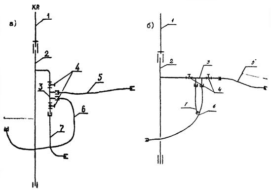

ВЕДОМСТВЕННЫЕ СТРОИТЕЛЬНЫЕ НОРМЫ
ИНСТРУКЦИЯ
ПО МОНТАЖУ КОЛЛЕКТОРНЫХ СИСТЕМ
ВНУТРЕННЕГО ВОДОПРОВОДА ЗДАНИЙ
С ГИБКИМИ ПОДВОДКАМИ НОВОГО ПОКОЛЕНИЯ
КО ВСЕМ САНИТАРНЫМ ПРИБОРАМ
ВСН 211-88
ОРДЕНА ЛЕНИНА ПРОЕКТНО-СТРОИТЕЛЬНОЕ ОБЪЕДИНЕНИЕ МОССТРОЙ
Разработаны лабораторией инженерного оборудования НИИМосстроя (канд. техн. наук Я. Б. Алескером, инженером Н. В. Митрофановой) с участием отдела сантехоборудования МНИИТЭПа (инженера С. И. Прижижецкого).
При составлении ВСН использован опыт работы Домостроительных комбинатов № 1, 2, 3, Хорошевского, Даниловского, Калибровского кабиностроительных заводов, трестов Моссантехстрой № 1 и 2, филиала № 1 объединения Моссантехпром и завода по ремонту башенных кранов МГПО Мосремстроймаш.
Согласованы с предприятиями-изготовителями подводок (филиалом № 1 объединения Моссантехпром, заводом по ремонту башенных кранов МГПО Мосремстроймаш), монтажными организациями (Хорошевским заводом ЖБИ, ДСК-1), МНИИТЭПом и УМЭСТРом ПСО Мосстрой.
Утверждены Техническим управлением Проектно-строительного объединения Мосстрой.
С введением в действие Ведомственных строительных норм «Инструкция по монтажу коллекторных систем внутреннего водопровода зданий с гибкими подводками нового поколения ко всем санитарным приборам» - ВСН 211-88 - утрачивают силу ВСН 211-84.
|
Московский строительный комитет ПСО Мосстрой Техническое управление |
Ведомственные строительные нормы |
ВСН 211-88 |
|
Инструкция по монтажу коллекторных систем внутреннего водопровода зданий с гибкими подводками нового поколения ко всем санитарным приборам |
1.1. Настоящая инструкция распространяется на массовое применение коллекторных систем внутреннего водопровода зданий с гибкими подводками с наплавляемыми буртами, изготавливаемыми литьем под давлением, и на опытное применение коллекторных систем с ниппельными соединительными узлами.
1.2. Подводки с наплавляемыми буртами изготавливаются по ТУ 400-28-169-85 «Подводки полиэтиленовые к водоразборной арматуре», а подводки с ниппельными соединительными узлами по ТУ 400-2-383-87 «Подводки к водоразборной арматуре полиэтиленовые с ниппельными конструкциями соединительных узлов».
1.3. Коллекторные системы внутреннего холодного водопровода (рис. 1 а, б, в) с трубами из полиэтилена высокого давления (ПВД) монтируются в домах массового жилищного строительства высотой до 25 этажей с санитарно-техническими кабинами производства Хорошевского завода ЖБИ ДСК-1 (ПСО Мосстрой), а также производства Калибровского и Даниловского кабиностроительных заводов ПО Моссантехконструкция (ППСО Моспромстройматериалы).
|
Внесены НИИМосстроем |
Утверждены
|
Срок
введения |
1.4. Конструктивными элементами коллекторных систем являются:
подающий стояк из стальных труб диаметром 25 мм;
поквартирный распределительный коллектор из стальных труб диаметром 15 мм;
полиэтиленовые подводки с наплавляемыми буртами (рис. 2) и с ниппельными соединительными узлами (рис. 3) наружным диаметром 12×2 мм с латунными накидными гайками к водоразборной арматуре;
запорная арматура (вентили диаметром 15 мм).
Распределительный коллектор с гибкими полиэтиленовыми подводками служит для присоединения к подающему стояку всех видов водоразборной арматуры (смесителей ванн и умывальников, кухонных моек, смывных бачков унитазов и др.).
1.5. Для изготовления водопроводных подводок применяют трубы из полиэтилена высокого давления (ГИД) согласно ГОСТ 18599-83.
1.6. Водопроводные подводки предназначены для систем внутреннего хозяйственно-питьевого водопровода с давлением до 1,0 МПа (10 кгс/см2) при температуре воды до 30 °С.
1.7. Основные физико-механические свойства труб из ПВД приведены в табл. 1.

Рис. 1. Схема коллекторной системы холодного водопровода в санитарно-технических кабинах:
а) марки УК-1 и УК-1М (с вертикальным расположением коллектора; б) марка УК-1М (с горизонтальным расположением коллектора); в) марка УК-2М (с вертикальным расположением коллектора):
1 - междуэтажная вставка; 2 - подающий стояк; 3 - распределительный коллектор; 4 - запорная арматура; 5 - полиэтиленовая подводка к смесителю ванны и умывальника, 6 - то же, к смесителю кухонной мойки; 7 - то же, к смывному бачку.
Рис. 2. Конструкция полиэтиленовой подводки с наплавляемыми буртами:
1 - латунная втулка; 2 - латунная накидная гайка; 3 - резиновая прокладка; 4 - стальная труба; 5 - полиэтиленовая труба.
Рис. 3. Конструкция полиэтиленовой подводки с ниппельными соединительными узлами:
1 - латунная накидная гайка; 2 - резиновая прокладка; 3 - латунный ниппель; 4 - обжимное кольцо; 5 - полиэтиленовая труба; 6 - стальная труба.
Таблица 1
|
Единица измерения |
Показатель |
|
|
Плотность |
г/см3 |
0,91 - 0,93 |
|
Предел текучести при растяжении |
МПа (кгс/см2) |
9,5 – 10,0 (95 - 100) |
|
Относительное удлинение при разрыве |
% |
250 - 300 |
|
Начальный модуль упругости |
МПа (кгс/см2) |
100 - 250 (1000 - 2500) |
|
Температурный коэффициент линейного расширения |
1/°С |
2,2 · 10-4 |
|
Теплопроводность |
Вт/(м·°С) (Ккал/ч·м·град) |
0,35 (0,30) |
Приведенные показатели характеризуют свойства материала при 20°С.
У показателей предела текучести при растяжении и относительного удлинения при разрыве верхние пределы относятся к средним значениям величин, а нижние пределы - к минимальным значениям.
1.8. Монтаж коллекторных систем внутреннего водопровода зданий с гибкими полиэтиленовыми подводками нового поколения ко всем санитарным приборам осуществляется в соответствии с проектной документацией МНИИТЭПа и других проектных организаций и требованиями настоящих ведомственных строительных норм.
2.1. Коллекторные системы (стальные элементы и подводки с наплавляемыми буртами) изготавливаются в условиях трубозаготовительного предприятия - филиала № 1 Московского государственного производственного объединения Моссантехпром (121096, Москва, ул. Василисы Кожиной, 14, тел.: 142-45-75). Водопроводные подводки с наплавляемыми буртами и ниппельными соединительными узлами изготавливаются заводом по ремонту башенных кранов производственного объединения Мосремстроймаш (Москва, 1-й Магистральный тупик, 5, тел.: 259-20-85).
2.2. Подающий стояк диаметром 25 мм и распределительный коллектор диаметром 15 мм изготавливаются из стальных оцинкованных водогазопроводных труб по ГОСТ 3262-75.
2.3. Технологический процесс изготовления стояков и распределительных коллекторов должен быть основан на поточном методе производства работ, включающем операции по разметке и отрезке труб, нарезанию резьбы, сверлению отверстий и сварке труб. Указанные работы должны выполняться в соответствии с действующими техническими условиями на изготовление водопроводных трубозаготовок из стальных труб.
2.4. Стальные резьбовые патрубки, предназначенные для соединения с полиэтиленовыми подводками, должны быть отторцованы.
2.5. Сварка стояков и распределительных коллекторов должна производиться в соответствии с требованиями, предъявляемыми к сварке оцинкованных труб.
2.6. Геометрические размеры распределительных коллекторов должны соответствовать специальным шаблонам и кондукторам.
Размеры и конфигурация распределительного коллектора по согласованию с заказчиком могут изменяться (рис. 4).
Рис. 4. Варианты конфигураций распределительных коллекторов с расположением штуцеров:
а) односторонним косым; б) двухсторонним прямым; в) двухплоскостным прямым; г) односторонним прямым.
2.7. Для изготовления подводок применяют трубы тяжелого типа (Т) из полиэтилена высокого давления с маркировкой «Питьевая» по ГОСТ 18599-83. Номинальный средний наружный диаметр и толщина стенки труб соответственно равны 12,0+0,3 и 2,0+0,4мм.
Пример условного обозначения трубы:
Труба ПВД 12Т питьевая ГОСТ 18599-83.
Материалом для труб служит гранулированный полиэтилен высокого давления (ГОСТ 16337-77) марки 102-14, первого и высшего сорта.
При изготовлении труб не допускается смешивать полиэтилен разных марок и использовать в качестве добавок вторичное сырье.
Примечание. При применении сырья, не имеющего разрешения Министерства здравоохранения СССР на использование для хозяйственно-питьевого водоснабжения, в маркировке труб должно быть указано слово «Техническая». Использование таких труб для изготовления водопроводных подводок не допускается.
2.8. Технология изготовления подводок с наплавляемыми буртами включает следующие операции: резку труб; установку одного конца полиэтиленовой трубы в пресс-форму термопластавтомата и последующего оформления бурта путем впрыска в нее дозированного расплавленного материала; установку латунных накидных гаек и втулок; оформление бурта на другом конце трубы.
2.9. Для наплавления буртов на подводках используются термопластавтоматы с объемом впрыскиваемого материала - 63 см3 и 125 см3 при нормальном давлении литья до 140 МПа с температурой пластификации до 350 °С.
2.10. Оснасткой к термопластавтомату для наплавления буртов к концам труб служит разъемная многогнездная пресс-форма, состоящая из двух полуформ. Полуформы имеют полуцилиндрические гнезда, соответствующие размерам буртов. В гнезда поступает из материального цилиндра литьевой машины жидкотекучая гомогенизированная масса расплава. Одна из гнезд полуформ, соединенная каналом с материальным цилиндром, неподвижна. Другая полуформа подвижна и снабжена подпружинивающим устройством и направляющими стержнями (знаками). Знаки диаметром 8 мм и длиной 60 - 70 мм служат для установки на них до упора концов полиэтиленовых труб.
2.11. Подпружинивающее устройство выполняет отвод обоймы с полуцилиндрическими гнездами от знаков, что позволяет осуществлять снятие с них готовых подводок.
2.12. Технологические режимы наплавления буртов следующие:
давление впрыска материала, МПа - 8,5
выдержка под повышенным давлением, с - 5
выдержка под пониженным давлением, с - 2
охлаждение, с - 13
полный цикл наплавления буртов, с - 22
температура сопла, °С - 250
температура обогрева:
III зоны, °С - 255
II зоны, °С - 260
I зоны, °С - 257
2.13. Подводки с ниппельными соединительными узлами изготавливаются следующим образом: на конец пластмассовой трубы надевается и сдвигается от ее торца на длину 2 - 3 мм обжимное медное или алюминиевое кольцо; в отверстие трубки вставляется ниппель с предварительно надетой на него накидной гайкой; производится обжатие трубы специальным устройством.
2.14. Для выполнения ниппельных соединений водопроводных подводок используют:
обжимные клещи (рис. 5), предназначенные для изготовления и ремонта ниппельных соединений в построечных условиях;
пресс-форму (рис. 6), в которой обжатие кольца осуществляется стационарным прессовым устройством;
механизированное устройство (рис. 7) для изготовления ниппельных соединений водопроводных подводок в заводских условиях. Механизированное устройство представляет собой стационарную установку в виде гидравлического пресса со специальной оснасткой.
2.15. Обжатие кольца должно быть равномерным по всему периметру без образования складок, вмятин и других видимых дефектов. Для стационарных устройств усилие обжатия при использовании медных и алюминиевых колец составляет 500 - 1000 кгс (усилие обжатия уточняется в процессе освоения производства для данного обжимного устройства путем испытания опытных образцов - физико-механических и гидравлических).
2.16. Разметку и отрезку полиэтиленовых труб следует производить на специальном устройстве, оборудованном мерной линейкой, подвижным упором и приспособлением для отрезки.
В качестве отрезного устройства могут служить подвижные ножи гильотинного типа, «стуловые» ножницы и т. п.
Рис. 5. Ручное устройство для изготовления ниппельных соединений в построечных условиях.
Рис. 6. Пресс-форма для изготовления ниппельных соединений водопроводных подводок - схема.
Рис. 7. Механизированное устройство для изготовления ниппельных соединений водопроводных подводок в заводских условиях:
1 - станина; 2 - гидроаппаратура; 3 - масляный бак; 4 - агрегат с шестеренчатым насосом; 5 - электрооборудование; 6 - оснастка; 7 - гидроцилиндр.
2.17. Концы труб должны быть отрезаны перпендикулярно оси трубы и зачищены от заусенцев.
2.18. Форма и габариты подводок должны соответствовать рабочим либо монтажным чертежам, разработанным и утвержденным в установленном порядке. По согласованию с потребителем допускается изготовление подводок с гнутыми участками.
Радиус гнутья подводок в горячем состоянии должен быть не менее 4 - 5 наружных диаметров трубы.
2.19. Для изготовления подводок используются латунные накидные гайки.
2.20. Втулки под накидные гайки подводок можно изготавливать из латунной трубки или листового проката.
2.21. Подводки должны комплектоваться резиновыми прокладками, изготовленными из листовой резины (ГОСТ 17133-77), допускаемой к контакту с пищевыми продуктами.
2.22. Упаковка полиэтиленовых подводок в количестве свыше 100 штук производится в бумажные мешки (ГОСТ 2226-75), при меньшем количестве подводки допускается перевязывать шпагатом в компактные пучки.
2.23. Каждая партия подводок должна быть снабжена биркой с указанием:
завода-изготовителя и вышестоящей организации;
наименования изделия и номера ТУ;
номера заказа;
отметки отдела технического контроля;
дата изготовления заказа.
3.1. Работы по монтажу коллекторных систем должны выполняться специально обученным техническим персоналом, ознакомленным со свойствами труб из ПВД.
3.2. При монтаже, погрузочно-разгрузочных операциях, транспортировке и хранении полиэтиленовые подводки необходимо оберегать от механических повреждений.
3.3. Подводки можно транспортировать любым видом транспорта в соответствии с правилами перевозки грузов, действующими на данном виде транспорта.
3.4. Хранить подводки следует в горизонтальном положении на стеллажах, в отапливаемых помещениях. Условия хранения должны исключать возможность деформирования подводок, воздействия на них прямых солнечных лучей, попадания масел, жиров и нефтепродуктов.
3.5. Сборка металлических элементов коллекторных систем осуществляется в условиях трубозаготовительного производства.
Примечание. По согласованию с заказчиком допускается сборка узлов на кабиностроительных заводах.
3.6. Металлические элементы систем (подающие стояки, распределительные коллекторы и запорная арматура) соединяются между собой с помощью резьбовых соединений, уплотняемых традиционными методами.
3.7. Сборка узлов коллекторных систем должна производиться в кондукторах, фиксирующих положение элементов и облегчающих процесс сборки.
3.8. Прокладка подающих стояков должна осуществляться преимущественно в монтажных коммуникационных шахтах сантехкабин в строго проектном положении, обеспечивающем свободный доступ к запорной арматуре и соединительным узлам трубопроводов.
3.9. Крепление стояков должно исключать возможность их проворачивания в процессе монтажа.
3.10. Подсоединение полиэтиленовых подводок к распределительному коллектору, настенному смесителю ванны (рис. 8) и штуцеру смывного бачка производится в условиях кабиностроительного завода, а к смесителю кухонной мойки - построечных условиях.
Примечание. По согласованию с домостроительными комбинатами и трестами санитарно-технических работ подсоединение подводок к смывным бачкам может осуществляться в построечных условиях.
3.11. Подсоединять подводки следует после окончания работ по монтажу подающих стояков системы водоснабжения и сантехприборов.
3.12. При монтаже подводки следует сначала присоединить к распределительному коллектору, а затем к штуцерам водоразборной арматуры.
3.13. Сборку соединений рекомендуется производить вручную до упора с доверткой накидных гаек ключом на 0,5 - 1,5 оборота.
3.14. После сборки подводка не должна проворачиваться вручную в отверстии накидной гайки. Проворачивание подводки свидетельствует о недостаточном уплотнении. В этом случае рекомендуется установка двух прокладок.
3.15. При обнаружении течи в соединениях следует подтянуть накидные гайки или сменить резиновые прокладки.
Расстояние в свету между пересекающимися пластмассовыми трубами и стальными трубами отопления и горячего водоснабжения должно быть не менее 50 мм. При невозможности выполнить это условие участок стального трубопровода в месте пересечения должен быть теплоизолирован. Для тепловой изоляции могут быть использованы оболочки из вспененного полиэтилена (типа «Вилатерм»).
3.18. В местах возможного механического повреждения, а также для выполнения требований п. 3.16 и 3.17 подводки следует крепить к строительным конструкциям с помощью крепежных хомутов и скоб (пластмассовых или металлических с пластмассовыми прокладками).
3.19. Санитарно-технические кабины поставляют на строительный объект в готовом виде, со смонтированными и предварительно спрессованными трубопроводами системы водоснабжения.
3.20. Для предотвращения засорения трубопроводов их концы должны быть закрыты инвентарными заглушками.
3.21. В построечных условиях монтаж коллекторных систем осуществляется путем соединения подающих стояков с помощью междуэтажных вставок и установки полиэтиленовых подводок.
3.22. В соответствии с п. 10.5 (примечание 4) СНиП 2.04.01-85 «Внутренний водопровод и канализация зданий» при коллекторной системе допускается не предусматривать установку запорной арматуры у смывных бачков.
4.1. Металлические элементы коллекторных систем водоснабжения должны удовлетворять следующим требованиям:
трубная резьба стальных патрубков, штуцеров, а также накидных гаек должна быть чистой, без срывов, не иметь забитых ниток и заусенцев;
внутренние поверхности гаек, контактирующие с полиэтиленовыми трубами, должны быть гладкими, без острых кромок.
Качество резьбы патрубков и штуцеров проверяется с помощью резьбового калибра-гайки (навинчивание производится от руки).
Качество резьбы накидных гаек проверяется с помощью резьбового калибра-пробки, ввинчиваемого в накидные гайки также от руки.
4.2. Диаметр отверстия в задней стенке накидной гайки с учетом допусков на наружный диаметр полиэтиленовой трубки должен быть равен 14,0+0,2 мм.
4.3. Накидная гайка должна свободно проворачиваться на втулке или обжимном кольце.
4.4. После наплавления бурта на трубе в переходных зонах не должно быть наплывов.
4.5. Контроль качества полиэтиленовых подводок осуществляется заводом-изготовителем.
Примечание. По согласованию с заводом контроль качества труб и подводок из ПВД может выполняться совместно с НИИМосстроем.
4.6. Полиэтиленовые подводки подвергаются испытаниям, при которых определяют показатели, указанные в табл. 2.
Таблица 2
|
Минимальное количество образцов |
Периодичность испытаний |
|
|
Внешний вид поверхности подводок и соединительных деталей |
5 |
1 раз в смену |
|
Размеры подводок и соединительных деталей. |
5 |
1 раз в смену |
|
Величина предела текучести при растяжении и относительное удлинение при разрыве материала подводки |
5 |
Для каждой партии труб, но не менее 1 раза в 6 месяцев |
|
Прочность соединения бурта с полиэтиленовой трубой (на отрыв и на сдвиг) |
по 5 |
То же |
|
Прочность ниппельного соединения |
5 |
То же |
|
Стойкость подводок к внутреннему гидростатическому давлению: |
||
|
при нормальной температуре |
5 |
То же |
|
при повышенной температуре |
5 |
1 раз в 6 месяцев |
4.7. Внешний вид поверхности подводок и соединительных деталей определяют визуально сравнением контролируемых образцов с эталонными, утвержденными в установленном порядке.
Поверхность трубы должна быть ровной, гладкой, не иметь трещин, вздутий, раковин, продольных рисок. Не допускается наличие разрывов и вмятин на бурте, особенно на его поверхности, соприкасающейся с уплотнителем.
4.8. Линейные размеры подводок и соединительных деталей проверяются мерительным инструментом (штангенциркуль, линейка измерительная, микрометр по ГОСТ 166-80, ГОСТ 427-75, ГОСТ 6507-78).
4.9. Замер среднего наружного диаметра производят в трех местах образца с точностью до 0,1 мм на расстоянии не менее чем 100 мм от торца подводки. Средний внутренний диаметр замеряют в двух взаимно перпендикулярных направлениях в каждом контролируемом месте с обоих торцов подводки. Толщину стенки подводки определяют как полуразность между средним наружным и средним внутренним диаметром подводки.
4.10. Толщину бурта замеряют в четырех равномерно распределенных по окружности точках с точностью до 0,1 мм и принимают как среднее арифметическое значение этих замеров.
4.11. Величину предела текучести при растяжении и величину относительного удлинения при разрыве определяют по ГОСТ 18599-83. Минимальные значения величин предела текучести при растяжении и относительного удлинения при разрыве трубных образцов должны быть соответственно равны 9,5 МПа (95 кгс/см2) и 250 % (скорость перемещения подвижного захвата разрывной машины 100 мм/мин.). Этим показателям соответствует минимальное усилие при достижении предела текучести труб равное 595 Н (59,5 кгс) и минимальное расстояние между зажимами разрывной машины 210 мм.
Схема испытаний трубного образца из ПВД на растяжение представлена на рис. 9.
4.12. Минимальное усилие разрушения при испытании трубных образцов с наплавляемыми буртами и с ниппельными соединительными узлами должно быть не менее 595 Н (59,5 кгс), что обеспечивает условия равнопрочности трубы и соединения. Схема испытаний на разрывной машине трубного образца с наплавляемым буртом приведена на рис. 10, с ниппельным соединительным узлом - на рис. 11.
Рис. 8. Конструкция узла для подсоединения полиэтиленовой подводки к настенному смесителю ванны для санитарно-технических кабин из: а) асбестоцемента; б) гипсобетона:
1 - резьбовой патрубок под накидную гайку подводки; 2 - контргайка; 3 - перегородка из асбестоцемента или гипсобетона; 4 - муфта под штуцер смесителя.
Рис. 9. Схема испытаний трубного образца на растяжение:
1, 4 - зажимы для крепления образца; 2 - полиэтиленовая труба; 3 - резиновый вкладыш.
4.13. Прочность соединения трубки с наплавляемым буртом при испытании на сдвиг (скорость перемещения подвижного захвата машины 20 мм/мин.) должна быть не менее 1560 Н (156 кгс). Схема испытаний прочности наплавляемых буртов на сдвиг с использованием разрывной машины или пресса приведена на рис. 12.
4.14. Испытания (рис. 9, 10 и 11) проводят на патрубках длиной 160 ± 5 мм. Внутрь патрубков во избежание смятия следует вставлять резиновые пробки длиной 30 мм.
Пробки допускается вырезать из колец, используемых для соединения пластмассовых канализационных трубопроводов диаметром 50 мм.
При замере патрубков за базу относительного удлинения при разрыве принимают базу 85 мм, равную расстоянию между захватами разрывной машины.
4.15. Металлические элементы коллекторных систем должны испытываться на заготовительном предприятии гидравлическим давлением в 1 МПа (10 кгс/см2) в течение двух минут или пневматическим давлением в 0,15 МПа (1,5 кгс/см2) в течение 0,5 минуты. При этом падение давления по манометру не допускается.
Испытания при повышенной температуре (70 °С) проводятся при начальных контрольных напряжениях 3,2 и 2,5 МПа (32 и 25 кгс/см2) (внутреннее гидростатическое давление при номинальных значениях наружного диаметра и толщины стенки 1,28 и 1,0 МПа (12,8 и 10,0 кгс/см2) соответственно в течение 1 и 100 часов.
Рис. 10. Схема испытаний при определении прочности трубного образца с наплавляемым буртом:
1 - крепежный штырь; 2 - крепежная обойма; 3 - стальная труба; 4 - резиновая прокладка; 5 - латунная накидная гайка; 6 - латунная втулка; 7 - трубный образец; 8 - резиновый вкладыш; 9 - зажим для крепления образца.
Рис. 11. Схема испытаний при определении прочности ниппельного узла соединений:
1 - крепежный штырь; 2 - крепежная обойма; 3 - стальная труба; 4 - латунная накидная гайка; 5 - латунный ниппель; 6 - обжимное кольцо; 7 - полиэтиленовая труба; 8 - резиновая пробка; 9 - зажим для крепления образца.
Рис. 12. Схема испытаний прочности наплавляемых буртов на сдвиг:
1, 5 - зажимы пресса; 2 - пуансон; 3 - трубный образец; 4 - матрица.
4.17. Трубы и подводки должны выдерживать испытания (см. п. 4.16) без признаков разрушения. При каждом уровне напряжения испытания проводятся на пяти произвольно отобранных образцах.
При неудовлетворительных результатах хотя бы по одному показателю этот показатель контролируется повторно на удвоенном количестве образцов, взятых из той же партии. Результаты повторного испытания являются окончательными и распространяются на всю партию.
4.18. Коллекторные системы холодного водоснабжения в условиях заводов по производству санитарно-технических кабин испытывают гидравлическим давлением в 1 МПа (10 кгс/см2) в течение 3 минут. За время испытаний падения давления по манометру не допускается.
4.19. Приемка коллекторных систем в эксплуатацию производится в соответствии с действующими правилами. При этом должен осуществляться предварительный визуальный контроль всех смонтированных полиэтиленовых подводок (перегибы труб, недопустимые радиусы изгиба, продольное скручивание, механические повреждения, соприкосновения с трубопроводами горячего водоснабжения не допускаются).
5.1. Работы по монтажу водопроводных полиэтиленовых подводок должны проводиться после окончания сварочных и других работ.
5.2. Литьевые машины для изготовления подводок с наплавляемыми буртами и прессовые устройства для изготовления подводок с ниппельными соединительными узлами должны обеспечивать безопасные условия работ.
СОДЕРЖАНИЕ
|
2. Изготовление коллекторных систем. 4 3. Монтаж коллекторных систем. 7 4. Контроль качества изготовления и монтажа коллекторных систем водоснабжения. 9 |